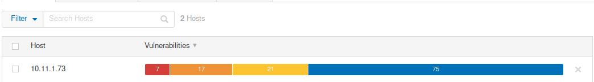
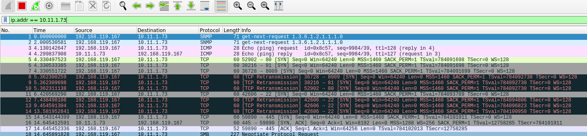
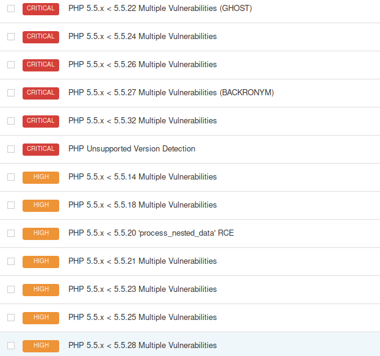

8.2.4.2 Exercises
☐ Follow the steps above to create your own unauthenticated scan of Gamma.
☐ Run the scan with Wireshark open and identify the steps the scanner performed to completed the scan.
The scanner used SNMP, ICMP, and TCP methods to verigy the host was up before making a connection and begining further scanning, which started with server message block protocol.
☐ Review the results of the scan.
It appears as if a PHP update would solve the majority of the critical and high vulnerabilities.